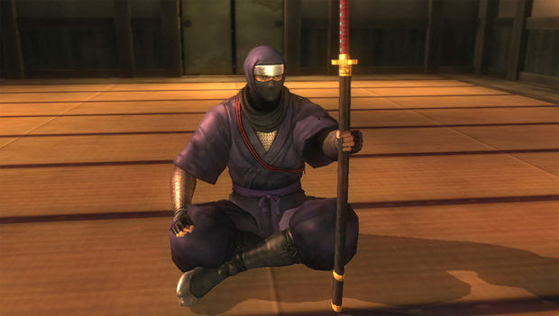

Ninja Gaiden is een action-adventure hack en slash video game ontwikkeld door Team Ninja voor de Xbox video game console. Het ging door middel van vijf jaar van ontwikkeling voor de release van Tecmo in 2004, en had een aantal uitbreidingspakketten en twee remakes , Ninja Gaiden Black en Ninja Gaiden Sigma . Het spel volgt het fictieve verhaal van Ryu Hayabusa , een meester ninja , in zijn zoektocht naar een gestolen zwaard terug te krijgen en te wreken de slachting van zijn clan.
Tecmo specifiek gericht Ninja Gaiden op een westers publiek, en ondanks de moeilijkheden bij het verkrijgen van de inhoud ratings als gevolg van het spel grafische afbeeldingen van geweld, was het over het algemeen goed ontvangen, en 362.441 exemplaren werden verkocht in Noord-Amerika in de eerste maand na de release.  Toch moest het spel worden gecensureerd voor een release in sommige regio's, en de Japanse verkopen waren slecht, met slechts 60.000 in de vier maanden na de release. Door gebruik te maken van de Xbox's internet-connectiviteit , Ninja Gaiden was het middelpunt van een reeks van online wedstrijden in Noord-Amerika, Europa en Japan. Recordbrekende aantallen spelers namen deel, strijden om plaatsen in de live finale, die werd gehouden tijdens de Tokyo Game Show (TGS) 2004.
Team Ninja bleef het spel na de release te werken: twee Hurricane Packs beschikbaar als gratis werden gemaakt downloadbare content die extra content, gameplay uitdagingen, en voegde motor spel . Verbeteringen [1] Deze werden opgenomen in een herwerkte versie, uitgebracht in 2005 en de titel Ninja Gaiden Black , dat door de maker van het spel werd beschouwd Tomonobu Itagaki en veel spelers als de definitieve versie. In 2007, Ninja Gaiden werd grafisch verbeterde op de PlayStation 3 , met extra content, in de vorm van Ninja Gaiden Sigma . Deze versie werd later uitgebracht op de PlayStation Vita als Ninja Gaiden Sigma Plus